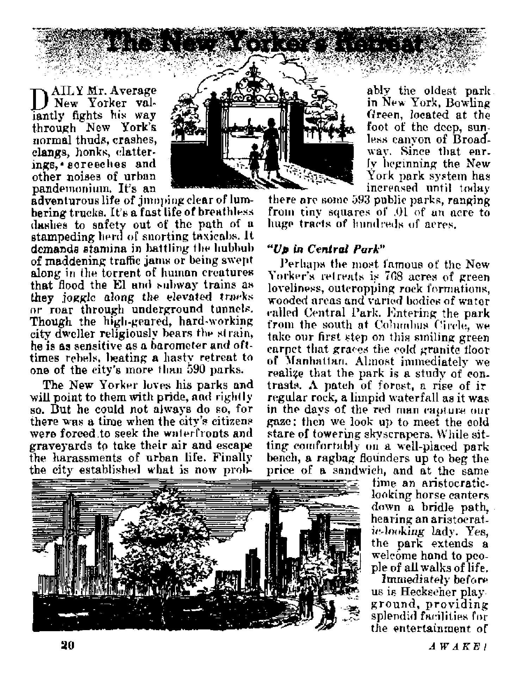
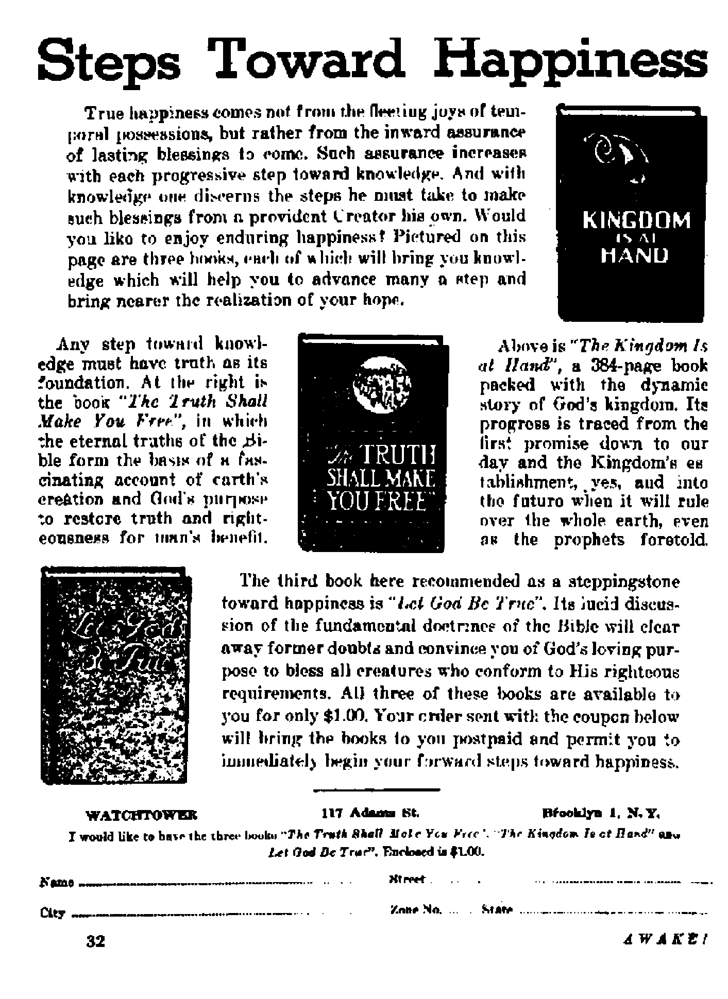

This article does not propagandize for nor try to rouse hatred against* It reports facts observed from within
Campaign afoot to "get” Jehovah’s witnesses
How to pan gold from musty mountains of lore
Is the Catholic priest
MAY 22, 1950 semimonthly
THE MISSION OF THIS JOURNAL
New» khitc«0 that are able to kdep you awake to the vital issues of our ihnes must be unfettered by censorship and selfish interests. "Awake!” has no fetter*. If recognizes facts, faces facts, is free to puhliah facts# It is not bound by political ambitioni or obligations; it la unhampered by advertisers whose to** must not ba trodden on; it is unprejudiced by traditional creeds. This journal keeps itself free that it may apeak freely to you. But It do« not abuse its freedom, ft maintains Integrity to truth.
"Awake I” us® the regular news channels, but is not dependent on them. Its own correspondents are on all continents# in scores of nations. From the four corners of the earth their imcensored, on*the-scenes reports conic to you through these columns. This journal's viewpoint Is not narrow, but is international. It is read in many nations, in many languages, by persons of oil ages. Through its pages many fields of knowledge pass in review—government, commerce, religion, history, geography, science, social condition^ natural wonders—why, its cover* age is as broad as the earth and as high oa the heavens.
“Awake I” pledges itself to righteous principles, to exposing hidden foes and subtle dangers, tv championing freedom for all, to comforting mourners and strengthening those disheartened by the failures of a delinquent world, reflecting sure hope for the establishment of a righteous New World,
Get acquainted with “Awake!” Keep awake by reading “Awake!”
rtBtUfllMj 0EHIMOMTli|.T UT WATCHTOWER BIBLE AND TRACT SOClfCTY, INC
117 Ait am 5 Stirrl N, H. Kkorb, PrwUteiif Five cents a wpy
tMhttam rtouN b* »>* tn rtlrt 1c jwi cwki-Lrj Ja tvupU*»c« with rvful.Hcn. h, pi.ranlH Mil «UWI7 f»I WIUJ. Val.uhO »rr weeplri al RrwAln fnxr miciM rtEJt N> ctkr hc»i<4. tf IdbfraiUnl'l CI.MT Mttf *UJ, t.tti In dWtnci <wunLric *n h*n tuurf in local Cumae Motta a nemua («1i* mtwl Wui> h it Uh two t«*» twfwt ■nMTVUii aiflr®-
'' fciitmd u teuna-ctao ■aizr timklrn, N.
Brooklyn I. N‘. ¥., U, t?, A. Gimbt HvurER, Seevcfru-y Ona dollar a year
CUW0 ci iMi» ■lien nut to *• cA> eay t* rk*tt:ia iCrrUft within are b»Ui httfl four «id *i «, iw Midns
(•ni Vt 'It KDtmrrloLI w Vite
1,1,, I IT Atfww (A, tadUfu I, F.Y. fl (■trail. 11 Hr«ta< M, aLradjOrld, N.I w. 6s c**ti. 411 Irwin .414,, Tnnalo 1. Utu«lo *1 Eoftaaf. 11 Cn«n Terrace. temta, K. 2 5s SHU Afrln, 62(1 BoiUhi Ilsu*e, Cipo Town ,
~ , in «r Moth Mnied m u. s. A.
CONTENTS
Inside btaim’s Russia To Stalin’ft Labor Catupt-Entertainment arid Education Industry and Agriculture
Measure of Man
3
4
5
6 6 H
The Dominican Bapuh he (- hokiSi Free Worship 9
Campaign Againat Witnetsea Widespread 10
Practical Use of Libraries How to Use the Catalogue Periodicals and Ollier Services
Science in Ancient Times
The New Yorker's Retrrut
Something to Make the Bruni Cheer
Iio*' Parks Glorify Ged
Friend or Foot
“Thy Word Is Truth” A Private Wire to God?
Peace of Mind in a Frenzied World
Watching the World
17 IS, 18 iy 20 22 23 23
24 26
2B
A multitude of "excluiive” reports have been gathered and many book* have been written about conditions inside the <J. B. S. R. Borne of these have presented the facts as they actually exist behind the "iron curtain"; while others, In an attempt to create propaganda and arouse hatred, have turned facts into fiction and hearsay rumors into known falsehoods. The material for the following article wai gathered by an "Awake!” correipnndent in Turkey from a man who ha* Juit returned from Russia after having epent four yean there a* an officer in the German army and four additional years in Stalin’s slave labor camps. During those eight long years from 1041 to 194$ he was able to see with his own eyes what goes on Inside Russia today. The following story was gathered In an interview with this young man.
BACK in the early stages of World War II, Mr B---had just finished
his college education. He had planned to he a lawyer, but no sooner did he graduate from school than he was inducted into Hitler's expanding war machine and sent into training as a tank operator. After some months of fighting in France he was promoted to the rank of lieutenant and assigned to the eastern frontier, where German military intelligence planned an invasion of Russia and a blitz offensive aimed at Moscow.
In June 1941 the break through began. Armored divisions and artillery units poured onto Russian soil and began their march northward, with troops of soldiers bringing up the rear. Mr. B----was in
the elite Panzer tank outfit at the time and observed that they were making fast progress, often as many as forty miles a day, toward the capital, with little or no resistance from either the populace or Soviet troops. Often they paused to wait for their own foot soldiers, then on they rolled, hoping to capture the red-bricked Kremlin by autumn.
Their blitz offensive was stopped short, however, just outside of Moscow itself. The Russians were well entrenched by this time and were able to stave off the advance of the Germans. As the weeks went by cold winter set in, with extreme frigid temperatures, which sometimes reached 50 degrees or more below zero. The Soviet troops were well equipped for fighting in such cold, hut the poorly dressed German soldiers were unable to continue their offensive. They soon learned that oil would freeze in such terrific cold, and their armored divisions could not move in the deep sw, Thou-sands lost their lives as the military strategists prepared to retreat without capturing their prized target.
Most of us are more or less familiar with the German retreat, the second and third offensives and the succeeding battles in Russia from the winter of 1941 to the end of the war. Finally, by May 1945, when most of Hitler's troops had returned to their former positions, and many were located in Czechoslovakia and other countries along the Russian border, it became plain that they would soon be captured either by the Anglo-French-
American armiea from the west or by the Soviet army from the east.
Mr. B---- relates that his general,
who had around a million and a half man with their equipment in Czechoslovakia, flew to General Eisenhower, and there signed an agreement with him that at the time of capitulation all German troops would give themselves over to the Anglo-American forces rather than to the Russians. In the meantime, at the Yaita conference, it wan decided that Germany would he divided into zones, pending the setting up of a permanent German government later on. Thus in April ana May, when the Germans in the Eastern sector began giving themselves over t<»- the Western forces, they were told that they would not be taken as prisoners of war but would he left in Eastern Germany, where the Russians could do with them as they wished. In this uncertain turn of events al. the time of official surrender millions of soldiers were taken (without equipment, which had been turned over to the Allies) by the Russian army as prisoners of whl In short order they were herded into trains and headed for Russia again, but this time as captives, wjth faint hope of ever seeing their homeland again.
Mr. B---* was taken to a small work
camp of about 2,500 prisoners. There they were told that they would engage in road building and construction work eight hours a day and that they would be well fed. But facts proved to the contrary when they were given three times daily a tiny piece of black bread and a thin soup made from boiled corn. Naturally their strength ebbed each day as the cruel guards forced them to toil on with pick and shovel. After a few months many began to die from imdernourisb-ment and sickness resulting therefrom.
Then came the cold, freezing winter months. But despite the frigid temperatures they were driven like beasts to work on. More died of fatigue and exposure. Some attempted to escape hut were always caught and brought back to solitary confinement, where they were given bread and water for a period of three months. It was a dull life indeed in which all hopes waned as they looked constantly at barbwire and guards with Tommy guns, This continued for an unbelievable four and one-half years of suffering and misery, during which time nearly half the prisoners died and were left in the snow and cold. It might be noted in passing that nearby was a women's slave labor camp which contained young girls from Spain. They,had been taken when small children by the coni-munists during the Spanish civil war years ago. They, too, had g/vew up &U hopes of returning home.
"The Soviet state determines the behavior and activity of Soviet citizens in various ways. It educates Soviet people in a spirit of communist morality of the system which introduces ti series of* norms regulating the life of the population, imposing interdictions, establishing encouragements and naming punishment for the violation of these norms. The Soviet state stands guard over these legal norms with al] its power. The conduct and activity of the Soviet people are also determined by the force of public opinion, which is created by the activity of numerous public organizations. In creating public opinion the decisive role is played by the Communist party and the Soviet stale, which, through various media, formulates public opinion and educates the worker in a spirit of Socialistic awareness.” From issue No. 4 of Moscow Bolshevik.
From the above it can be seen that the state does the thinking for the people. In order to carry out the communist policy of suppression, secret police, known as the MVD, are brought into action. These
J. ifakE 1
are empowered to terrorize, and their methods are cold and cruel. Their first aim is to neutralize any political opposition by arresting (almost always at night) all suspects and sending them to labor camps* Execution is also a common means of destroying their opposers. If the "crime” is a lesser one the accused may lose only his ration hook or job; but if the MVD think he knows something going on under cover, they may go to ah ends of torture to make him "confess”.
To assist the MVD police, "informers” are placed among the populace to observe the movements of the people. Conversations are overheard and reported, suspects are shadowed to see where they go and whom they meet. Then, suddenly, without notice, arrests are made, and more are sent to wTork in unpaid labor camps. This all tends to create a feeling of insecurity, as one may not know if his next-door ' neighbor is a secret police agent or an informer who will report his everv action.
It is estimated that not more than three percent of the inhabitants belong to the Communist party itself. Members are chosen from workers who have proved themselves willing tools of the Bolshevik program of nationalization and industrialization. They may be considered "reactionaries” and not be admitted into the party if members of their families were officers, teachers, priests, etc., during or after.the revolution. Thus, despite Soviet propaganda to the contrary, class distinction does exist in the U.S.S.R., and daily the gap between the rich and the proletariat widens.
Life, therefore, among the masses is a dreary one indeed. What with the suppression of human freedom by an all-powerful secret police on the one hand and the feeling of uncertainty which is created under such restraint on the other, the common people suffer yet more by a reduced level of monotonous inadequacy, which never sinks quite to the starvation point. The food distribution system is far from adequate, and at best the diet is slim and of no varietv. Ration books are given according to the civic category; thus party members, officers, teachers, etc., are granted sufficient food and clothing for comfortable living, while those of the masses are given less than required for a common worker. In one village there was no bread for a period of three months, and when one realizes that bread is the basic food, he can see the seriousness of the situation.
Everywhere, both in lixedTprice stores and on the open market, food and clothing are expensive. As an example of the extremely high prices, in one village butter was selling at an equivalent of $4.00 a pound, eggs at from 30 to 40 cents each and meat from, $2.50 to $4.00 a pound. Fruit and vegetables are not so expensive when in season, but during the winter months even these commodities run into black-market prices.
Nobody laughs in public. Exceptions are at movies and theaters where capitalism is ridicujed and so-called "foreign imperialism” is made light of. In fact, no entertainment exists which does not directly serve the advancement of the communist ideology. AH plays, movies and concerts are censored before running, in order that the people may see what the government intends to be shown.
The same is true in the schools. Teachers are chosen from among party members who are capable of instructing the children in Marxist doctrine. Books are supplied which exalt the communist state and advocate the socialist program. Thus, along with the regular school curriculum of history, science, etc., the youngsters are taught patriotism, physical fitness and preparedness for war. They are even given heart-to-heart talks teaching them that Jhere is no God, that all capitalist countries are determined to
overthrow the Soviet regime Bud that only Russia represents true democracy, justice and peace. Consequently, when a child is ten or twelve yea th of age he is well-grounded in the communist doctrine.
Every form of business and labor is government cent rolled. Even the workers arc conscripted and sent wherever they are needed most. Military’ production is accented, and the usual policy is to make as many additional pieces as possible during the working period. In most of the factories the original owner? have been dispossessed. and directors chosen from the workers have been put in their places. These new factory' directors are ■subject to a political director, who gives the orders and Mis how many pieces each worker should produce.
In this regard it is interesting to learn about a Russian hero named Stakhanov, who introduced a new piecework system of increased production, lie was a coni miner who, in 1935. instituted ‘'brigades” of workers who were trained in a method of teamwork based on strict division of labor. These workers were able to produce much more rapidly than was possible when individuals worked alone, and in time their methods were applied in various forms to many branches of industry. This later became known as '■^takhanovism”, and today every laborer is expected to meet the high standard of production ect out by this policy. A worker who excel Is in this spirit of competition is often made director of the factory, to take the place of fl former on** who refused to take orders from his political superior.
Out on the often-heard-of collective farms a similar pace of increased yield is demanded. Here the families live together in communal fashion and cooperate in tending the government-held lands. At ha r vesttime taxes musd be paid in kind, and sometimes the jieasanU are left with only about twenty percent of their produce with which to live on until the next year. Due to a lack of modern farm machinery7 much work has to be done by laborious methode and long hours of work. It is said that on these community farms “it is impossible for the peasants either to live or die”. They are kept just above the starvation point by receiving an additional hog or sheep to tide them over until the next year
Hostility toward religion is made clear in Marx’s much-quoted phrase, which de-seriltes it as the “opium for the people”. In the larger cities, though, like Mnwow, sonic churches arc permitted to remain open, and thus camouflage the fact that religion is nol free; for it is in these cities that foreign observers usually attend church, especially on holidays. Atheism is obligatory for all members of the Communist party, and they never at tend religious services, for fear of loosing their membership. Neither should teachers, government workers, soldiers, etc., be seen inside a church building, under threat of losing at least their ration book and perhaps even their position.
Although perhaps lately more tolerance is shown (award religion than in the days following the revolution, still worship openly is suppressed. No young clergyman may be officially ordained for the ministry’, although former priests who somehow escaped the terrible days of 1917 may still remain in their parishes which nrp open. According to Mr, B----
nearly every home contains some religious articles of worship, and many of the older people say prayers before these in private.
One experience will illustrate the attitude of the younger generation toward participation in, religious worship: A girl told how her poor mother prayed each day tn the "virgin” and God, while she never made a prayer but went to the movie? with her fiance, a young commissar. Her mother, she added, was poor,
hungry and ill clad, while she was wealthy, well dressed and even had chocolates, considered a delicacy in Russia. By this she intended to show that God is nonexistent or unable to answer prayers.
In the rural sections practically all churches have been closed to public worship, Many near the collective farms have been turned into garages for farm machinery, others have been converted into storage bins for grain, while the larger and nicer buildings in the villages have been made into schools and museums. Mr. B---- visited one such mu
seum and, among other things, observed an exhibit showing the various stages of the human embryo during pregnancy. At the last picture was an inscription, roading: "From all the foregoing it can be realized that only the man and the woman give life to the baby and that God has nothing to do with producing it as has commonly been believed.”
Marriages are not performed in the church. The bride and groom must be wed by an official of the state, who first checks their registration card to see that they are not "reactionaries”. If they are "clear”, then a ruhber stamp does the trick, and they become husband and wife. Divorces, though, are harder to obtain, despite the fact that families are often separated from one another under the work conscription law.
One day a few months ago Mr, B——■ was going about his usual task in the prison ward when word came that all the prisoners were to assemble for routine inspection. Nobody dared hope that he would get to return home, and no one knew that Eastern German politicians had asked Russia to send hack prisoners of war whose homes were in the Eastern zone under communist indue neo, so that propaganda could be made of this move. In the examination many were rejected, but some were accepted to be removed from the camp. Mr. B—- was among those few who were told to pack their clothes- Up .to this moment they thought that they<would be transferred to another camp nearby, but when they were put on a train they began to suspect that it might take them across the border toward their homes.
All along the way everyone was quiet and calm. It was like a funeral for its solemnity. At the border Russian guards came through and ordered several of the men off before the train started again on its journey. This happened again and again as they passed through other countries under communist influence, until many of their number had been taken from the coaches. Mr. B— estimates that only about a thousand of his group finally ‘Tossed the border into Germany.
At 7 ist they reached Berlin! What a difference from a few years before! When released by the Russian authorities, many began searching for their homes destroyed in the bombing raids or for their families who were either dead or scattered here and there. It is reported that most of the ex-prisoners managed to get into the Western zone, now under a new German government. That, at least, is what Mr. B----did. There the Amer
ican officials questioned him as to what he saw and where the prison camps are located, etc. From there he was granted an entry visa to Turkey and made the trip to Istanbul, where he told the above things to the Awake! correspondent. It was a happy ending to a cruel, trying and hopeless experience under both the Ger-111 an and Russian "masters”. His health is poor and the memories of the past still flash before him like a film on the screen, hut little by little he is adapting himself to a new.way of life after nine long years.
The fact is that millions of prisoners are still heing held in the U.S.S.R., where it is a crime to worship God and to s&y No to the state. The communist press hailed the release of these few prisoners as a "generous gesture”. But this is another dodge or trick to further confuse the complex conditionB in countries under Stalin's control. It is typical of Lenin’s description of how communists must, triumph : “We have to use any ruse, dodge, trick, cunning, unlawful methods, concealment and veiling of the truth . . . As long as capitalism and socialism exist, we caniiiii live in peace; in the cud one or the other will triumph-—u fdneral dirge will he.sung over the Soviet republic or over world capitalism . , * but until this takes place the principal role is to dodge and maneuver.” Certainly they plan to continue their triei^, veiling of the truth and n nine livers, because reports show that they have a strong army and are continually increasing their military strength. Their uniforms* their equipment ana precision can hardly be equaled, according to most authorities.
Without doubt Stall r/s Russia is one of the kingdoms mentioned in Daniel's prophecy* which, along with the other ■ wicked nations of the earth, will be utterly destroyed at the battle of A rmaged-don. The account in chapter 2, verse 44, reads; “And in the days of those kings shall the God of Inytven set up a kingdom which shall never be destroyed, nor shall the sovereignty thereof be loft to another people; but it shall break in pieces and consume all these kingdoms, and it. shall stand for ever/' (Am. Stan. Ver.) From the King of that righteous government the communists will find no way to dodge and maneuver.
Measure uf Man
Reading the news rftutinc of daily bonstiup*one is AH?nn*d world Leaders have not taken to heart thft divine deflation: “Wind im man, that thou art mindful of him? and the ejoti of man, that thou visitest him!" The mighty among men could profitably dwell un thewe further facts: /YU the inhabitants of earth could be packed into h cttlfin one cubic, mile in <?rmcn#rtnn. leaded with al) htmutii this box would not «pan Grand Canyon, Arizona, fill a single crater such as HaWtaln or Mauna Kca (Ilawiiiian Inlands), nor break within three miles of the surface if dropped into one of the oceandeeps. Flung1 into many a rugged range or jungle of either hemisphere, its arrival would frighten birds and animate but a moment. Tn volume it would be matched by the daily flow of the Amazon. This globe itself is one of the KunUlfT planets of our solar system, centered by the huh which is 332,000 times the mass of the earth. But how much of celestial space does the sun and its revolving planets take tip! Tate a look at un astral chart the Milky Way. The Milky Way is the galaxy in which the solar system eo-fn net inns. Spread out like a plate the stars irregularly fill the sky’s flattened representation. Near the plate's outer rim is a small crumb. This insifyniArant item portrays our entire solar system! From his comparatively stationary position of observation, man has probably seen very little of the universe, even with Palomar’s giant eye. But even so his observation leads tn the conclusion that the Milky Way lh not the only island universe with multiple «>tar systems. Before the observable bounds 3f space had been expanded to one billion light years by Palomar’s 200-ijich mirror, scientists estimated that at least UDO million other galaxies vied with the Milky Way for astrophysical prominence, Who, then, will presently dispute the possibility that if human astronomers were projected a billion light years (Light travels about 6 trillion miles a year.) in, sayT a billion directions that US many inure nebulae might be observed by tach? If earth itself is like a grain of sand in ft Sahara of matter-strewn space, of what impor-t.anee is one human dictator of dissolvable float to the Maker of the immeasurable universeT La ft overstatement then. to repeat; “Whfd is riwi, that thou art mindful of him Could not the rulers of earthly empires profitably heed the further truism: “Before him all the nations are Ha nothing; to him they are hut empty and inane”!■—Isaish 40: 17, Moffatt.
By "Awake!” correspondent In Dominican Republic
IT WAS a pleasant day in December, warm, sunny, and the parks were full of flowers. Leon Glass and his American friend Jeremiah Stolfi were contented with their lot ip life as they walked down Conde street in Ciudad Trujillo, Dominican Republic. They had problems, but they had freedom to do the thing they most liked to do, that is, talk to the people about their belief in the Bible and about the promises of a bettor world to come that they found in the Bible.
As they'passed the place of Leon’s employment, in the new modernistic building that housed the National Lottery, Leon said, "Let's go in and weigh ourselves on the penny scale.” What a shock they both got when the doorman said, “I have orders to not let Leon Glass or Francisco Madera enter this building.” ’‘But why?” Leon asked. "You’re not employed here anymore, and my orders are to not let you enter this building,” responded the doorman.
Here was another link in the chain of events that were to follow. A day before the scene at the door of the Lottery, a telegram to the president of the Dominican Republic, Rafael Trujillo, was circulated in the office where Leon and Francisco worked, extolling the president for his declaration against all aggressors of this country. The signers also stated that they would be faithful to the present regime and that they would recognize no Bible but Trujillo’s. Leon and Francisco couldn’t sign allegiance to any man or rule of man, because theyr would have to break the agreement they had made with God to put Him-first, recognizing Him as their savior.
Yes, they lost their relatively well-paying jobs, and
a few7 days later they7 got their call for military service in the army. These calls for military7. service, according to law, are to be made by lof. Under military service laws provision is made for exemptions. These exemptions are undefined, but generally mean crippled or sick subjects. The two witnesses made application for exemption to President Trujillo, because they w7ere ministers devoting their time and energy to gospel-preaching. In their application for exemption they presented testimonials and other proofs of theif ministry. All papers were sent to the president by way of the military7 office and sent certified wdth return receipt requested. The army colonel said the letter was forwarded to the president from his office, but no return receipt w7as ever received.
Casting Crooked Lot
A few7 days later al] who had signed the letters and testimonials received calls for military service. Maybe one could say7 that it was just chance that all these persons who had interest in the Bible educational work of Jehovah’s witnesses were called, but when two American citizens also were called in the lottery it gave the whole thing an odor of planned opposition. When asked how it was that the names of Americans came up in the Dominican.lottery for military7 service,
the officer said, * Such questions shouldn't be asked"
Unusual, you might say, for a republic that is seeking tn demonstrate its kindness and liberty to a United Nations investigating committee who are wondering why there is so much unrest in the Caribbean area. But wait. The day arrives for the men (four now) to accept military training. They report to the of flee and are immediately put in the army fort prison. That was Monday, January 2. The law says that for failure to train the penalty is five days in prison for each day of failure. The five days pass, and still the four are in prison without charge or hearing. Sunday comes. This is visiting day ai prison, so about fifty friends of the witnesses go down to the fort to visit them. Instead of permitting the fifty to enter at one time and visit the two hours that are allotted each Sunday for visiting, small groups of eight or ten are permitted to visit only ten or fifteen minutes, and then another group comes in. The visits are in a special room, and all who visit those boys must give their cedufa numbers and names. In this way all who had sympathies with the boys were identified. Needless to say, all men who visited the boys were also called for service.
After visiting day Sunday, comes Monday, with the witnesses still in prison; then Tuesday morning a guard says to the men, “You can go home" They spend one night at home, and the next day the guards come looking for them, and to prison they go again.
In » few days a semblance of legal justice crops up. Rumor has it that they are to have a trial. One day before the trial comes instruction that they ready themselves for the trial. They put on clean clothes and are taken to the Palace of Justice.
In the courtroom there are about a hundred people, mostly witnesses, who are assembled there to hear the trial. They are accused by the court of refus-
ing military service. Their defense is that they otey God when laws of man conflict with God’s laws, and since they are citizens of this republic whose slogan is “God, Country and Liberty” they arc do ing just that, obeying God first. They also make the point that the jmeahJanJ hasn't denied them exemption nor has he given them the exemption that they asked for. After a hearing of about fifty minutes the court recesses. Next day Dominican justice decrees that God must bow to military service and fixes a penalty of eighteen months in prison at pyblie work Appeal is made to u higher court, and the witnesses go back to prison tn labor for the state.
Events are happening in other parts of the country too. San Francisw de 21a-coris (10,000 population) was just recently opened up to Watchtower missionaries and their Bible educational work. They (four girls) met up with Catholic opposition. Teen-agers pestered the girls with a song whose theme was 'get out yon Protestants, we are Cathodes'. The Kingdom Hall sign was torn down. Pcat-erers got bolder and threw stones and sticks, making educational missionary' work more difficult in certain parts of the town, and this in spite of a very much respected police force.
Santiago (50,000 population) has its downtown streets littered by thousands of big handbills, 10 by 12 inches, downing th? Watchtower and Awake! magazines, warning Catholics to have nothing to do with Jehovah’s witnesses, and ending up with, “Long live the virgin of High Grace" (patron saint of the Dominican Republic). The “Gentlemen of High Grace" sign the handbill; but evidently it’s not so 'gentlemanly* to put the handbills into the hands of the people, because ruffians, beggars and rough kids of , the street put them out, and many of these, when informed by the witnesses of the nature of the handbill, refuse to,
put more out, A few weeks iaier another one appears linking The Watchtower, Awake! and Jehovah’s witnesses with communism. This one is signed by the “Youths of High Grace”. The military service call puts a witness in prison for two years in Santiago. Almost all who had been studying with witnesses were called down to the army fort and warned not to have anything to do with this work.
In San Cristobal (3,000 population), birthplace of the reigning president, one of Jehovah’s witnesses is a businessman, a pharmacist. He has Bible studies in his home pharmacy. One night someone tore down the Kingdom Hall sign from the house front. Police came the next day with a warning to quit his preaching activities or sutler the consequence of mob action. Mob action by citizens in this so-called republic is as rare as it was in Germany under Hitler. The threats have failed to accomplish their purpose, because Luis, the witness, continues his preaching work. Gasoline is rationed here in this country, and Luis recently bought a car and got gas to operate it; but this campaign against Jehovah's witnesses started, so, when he applied for gasoline, he got the tickets one day and the next day a policeman came around and took them away. His authority wrns from the head of the rationing setup.
Then the next thing was the call for military service. Although Luis is over 40 years old, he v’as called. The law says that only in time of war are men between the ages of 35 and 55 to be called for service in the armed forces, but now is a time of peace. This service is for two hours the first Sunday of each month. His callletter added, “And your failure to report will be considered an act of rebellion and will mean your internment in a military camp.” .
At his failure to report for conscientious reasons he was put in the army fort and spent one night there. The next day influential friends made up bail and he got out. No time has heen fixed for the jifnv 22, 1950
trial. Six others who had been studying with Jehovah’s witnesses were called for military service, too. All lost their secular employment.
“Get” the Witnesses
Back to the capital, Ciudad Trujillo. Here the campaign has continued and has been far reaching. Now six witnesses are in prison. Exemption applications are still unanswered by the “benevolent benefactor” of the Dominican Republic. Several women have lost their jobs because they are Jehovah’s witnesses. People who stop to talk with the witnesses on the street are later warned to steer clear of them. Anyone who studies the Bible with one of Jehovah’s witnesses will shortly thereafter get a visit from a policeman or plain-clothes man with the familiar warning. ■
Some have frankly been told that there is a campaign on to "get” the witnesses. The witnesses are followed and shadowed wherever they go. Everything they do and say gets to the officials in power. Fear hangs over the people like a hateladen cloud. Each day brings news of more tightening down on Jehovah’s witnesses. The men .in prison are denied food from their families. A newspaper article in the Nation slandered the witnesses, saying they are communists. All manner of lies were published in the halfpage article. When the editor was confronted with the facts about the Watch Tower Society and their work, he didn't even try to defend his article but just talked about fulfilling laws. He knew he had no grounds for the .statements about Jehovah's witnesses’ being communists. He promised to print the letter, but that same night’s paper carried another slanderous article attacking the witnesses, and the explanatory letter was never published.
Consular and embassy officials of the American government, refuse to bring to light the truth about the false accusations against the American corporation,
Watch Tower Bible and Tract Society, and justify themselves with the statement that 'the situation here with Trujillo is very shaky already and they don't want to make it worse’. _
Through it all the witnesses have gone ahead with the preaching work and many good persons see the need of righteousness more than ever before and know that only God can bring in a just government. So they continue to pray, "Your kingdom come.” Jehovah’s witnesses know that there are still many good people who need to hear the Kingdom message, and by God’s grace they will hear, it. The witnesses are not radicals seeking to change governments, they only want freedom to carry on their Bible educational work to the Lord’s honor and for the benefit, of righteous men. Rulers and governors might think that by sub-jectingthemselves to and placating Catholic priests and cardinals, benefits will accrue to them both spiritually and materially; but let'them look at modern history. What benefits resulted to Hitler
')>--<< even if he did have a concordat with the pope? What benefit resulted from the pope’s blessings ! What benefits did Mussolini get from the pope’s blessings? Shot, kicked and spat upon. Franco has the pope’s blessings, and what’s the condition in Spain? Peace and prosperity! The opposite. Regularly the boat “Ma-gallenes” brings over about 700 refugees from Spain. Some get off here, others go on to Mexico, Venezuela and Cuba. Ask these refugees about Spain. They have told me that in the cities the people live, not from scarce rationed goods, but from the black market. Priests rule hand in hand with the police, but is their rule blessed with peace and satisfaction? Anywhere that Catholicism dominates, people suffer.
Is this campaign against Jehovah’s witnesses in this country a foretaste of the kind of an invitation that the pope tendered to Protestants who have 'strayed from the Catholic fold’! What a way to persuade wandering sheep!—and in a “holy year” too! -
Bloody Mary’s Mercy
The following is taken from the February, 1947, Catholic Digest article entitled “Death Under Two Queens”: “The sufferings of the Protestant victims of Catholic persecution in England, 1555 to 1558, under Queen Mary, have been realistically described by John Foxe, whose Book of Martyrs, held in high esteem in Protestant England, has been for many years and is'still an arsenal for weapons against the Catholic Church, John Foxe is responsible for Mary Tudor's name having become a household word in England for all that is vile and cruel: Bloody Mary, the wretched queen, and so on, , . .
“There is, however, one notable feature in the burnings of Smithfield, which has escaped the notice of Foxe and of subsequent Protestant writcrH. Those who were responsible for the burning of Protestants at the stake, whether it was Mary or her ministers, were not coldblooded, flinthearted fiends, who were bent on getting every ounce of physical suffering out of their victims. In fact, they concerted measures to shorten and lessen their pains. Death at the stake was not thereby made pleasant; hut it was not an intentional exhibition of barbarous cruelty,
■ (’•“It was officially permitted that those who were condemned to death at the stake should have a small bag of gunpowder before their breasts, which exploded at the first contact of the fire, and either caused speedy death or rendered the victims unconscious.”
■(.' Of course, it took a little time for the flames to elinib from the feet to Mary’s bag of mercy and blow a hole in the breast. Frequently a Bible instead nf gunpowder was hung around the victim’s neck, and his children were forced to put the torch to the fagots.
Bx ‘'Awake!” correspondent aboard th* Watchtower Society’s rniesinnary schooner ’’Slbla”
IT IS a pity that the Virgin Islands are not better known, particularly in Britain and the United States, since these islands cost the taxpayers of the United States much money and Britain much blood. Most people, however, have just a vague idea as to where they are, “down in the Caribbean somewhere.’' If you are interested, on the map run your eye to the east of Puerto Rico and you will see the small group of islands marked there. They consist of St. Thomas, St. John, St. Croix, Tortola, Virgin Gorda, Jost Van Dyke, Peter Island, Anagada and some lesser keys and rocks. The first three mentioned belong to the United States, bought from the Bancs in 1916 for $25,000,000. The remainder are claimed by England.
AU of the islands except Anagada were visited by the missionary yacht “Sibia”. Anagada is a coral island surrounded by shallow uncharted waters, so it was decided by the crew of “Sibia” to pass it by for the time being.
It is really hard to describe the islands, their shape and terrain, but if you were to take a wool rug and push it together from all sides the result might well represent what the Virgin Islands look like from the sea. Great ravines ripping the sides of the mountains, large saucerlike indentations, all verdant and lush with tropic growth and wild flowers.
The average tourist will see merely the outside, and will go home with an
JfAY 22, 1950
impression of sights and things prepared for such as he. But let him climb the donkey trails that wind back into the hills and he will meet the true islander— a sincere, kind, polite and soft-spoken person far different from those who loaf around the waterfronts.
A few yachtsmen and others visit the islands, most of them in the winter season. True, it is quite warm during these months, hut it is*hot too hot in the summer and the visitor then has more advantages: tropical fruits that grow in abundance, especially on Tortola, calm seas and delightful sea bathing on the most beautiful beaches.
During the winter months these same beaches are pounded by the heavy seas rolling in off the gale-swept Atlantic. The sand is washed up in big ridges and banks, the bare rocks revealed underneath. However, the sight of the great waves curling and dashing their mighty weight against the Hack rocks, worn smooth by many years of such treatment, is really worth seeing. One can fix his eye on a great roller away off from shore and watch it coming in, a majestic, powerful rich-blue mass of water which seems to gather speed and turn from Hue to pale-green as it nears the shore. It begins to crest and the colors of the rainbow form over its head. Jt curls back like the arched neck of a prancing horse and races with quickening speed, leaving a frothy wake behind until it crashes on the heach and rushes wildly among the stones as if seeking every lit-
13 tic moving thing to suck back into its boiling surge. All the while the air is full of sound and salty mist-.
In the summer these same beaches are covered with fine, level sand as the more peaceful waters gradually undermine the great ridges and smooth them down. It is then that one can lie under the broad-leafed shade of the sea-grape trees while little tropic waves whisper softly along the shore and wash soothingly over his body.
The inevitable argument against summer cruising in the Virgin Islands will usually be the possibility of a hurricane. Naturally, the hurricanes are something to be concerned about, hut in these modern days of radio and radio-telephone the yachtsman will be comparatively safe. San Juan broadcasts the weather conditions twice daily and usually gives sufficient warning so that any yachtsman may get his boat to a s^fe place. In some places “Sibia”, with her nine-foot draft, was able to draw close to the shore and tie fast to the mangrove trees and be perfectly safe even in the roughest weather.
Coral Bay, off the island of St. John, has several little inlets with deep water where a boat may seek shelter from the wind in any direction and really have nothing to worry about. The wind will rush down the mountain sides with terrific force, but it can merely ripple the water. There are other good “hurricane holes” at Tortola, Virgin Gord a, Jost Van Dyke, while boats of shallower draft might find many more.
People of the Islands
The common people of the islands claim to be quite religious, but they always manage to find some excuse for their many irregularities, especially in matters of sex. It is not considered a shameful thing for a man to have more than one wife or for a woman to be “kept” by more than one man and have children by them. In defense of the custom one man said: “Well, God know de weaknesses of he people." Another person, speaking rather derogatively of the local church, was asked, "Then why do you go'?” To which she replied rather indignantly: "Well, dat’s de only so&al-ized life we gits.” Most of the homes have only two rooms, and incredibly large families manage to live in them, which perhaps is the answer to their easy way of life. Quite often an introduction by a proud mother to her children will be : "Dis one an’ dat one mine, but dis one he my husband’s by de nex’ woman.”
The men make better sailors than farmers and are entirely without fear of the sea, storm or no storm, and their fearlessness has been the cause of many a family anxiously waiting for a father or brother that did not return. They handle their boats with a skill that is really surprising, considering the usually poor material they have to work with. Many times our hearts have gone out in pity for them as we have watched their weather-beaten craft set out for some distant island, men, women and children all carefree and happy, while aloft the mass of rotten patches called a sail looks ready to be carried away at any moment.
There is no encouragement for the people on the farms, as there is no market for all they*can produce. The British islands are unfairly taxed on produce leaving the islands and on whatever they buy with the money thus gained and brought back home. An old woman told us that she had to pay twenty-five cents tax on her little old grass hut, while the commissioner had recently been granted twenty-four thousand dollars from the government to renovate his mansion, and the people were organizing a march of protest on the commissioner’s house and were petitioning the United States to be annexed by them, hoping to thus better their conditions.
It seems that if the people were taught what to grow and how to grow it and had a market created for their goods, there
would be no reason at all why there could not be a steady crop of different things coining in all year round. As it is, the Spirit of most of the people is dead; they have little or no initiative or living standards, and could not have, as there is no means of giving scope to such standards except for a very few who control the politics and business of the islands. ’
The crew of “Sihia” bought avocado pears much larger than any we had seen in the States. There wTas hardly a day when one or the other of the crew did not bring in some kind of fruit or vegetable, more than we could easily eat. Sometimes our cockpit looked like a fruit stand. We have had coconuts, mangoes, mammees, limes, pears, guavas, sapodillas, bananas, soursops, sugar apples, breadfruit, pomegranates and . several other small but tasty fruits. Quite often friendly people would place a basket of various fruits on the deck as a gift and, poor as they were, would refuse money for it. “Sibia’s”crew were usually able to catch all the fish they needed by trolling when mdving from place to place.
The main food of the common people seems to be corn meal and fish if they live near the sea and rice and peas if they live up in the hills. The cooking is all done outside of the main house, in a shed of sorts or on the ground just outside the house. The “stove”, three stones around a wood fire with a margarine can for a pot in some cases; others have iron charcoal burners and iron pots. Few of the houses have tables, and the eating is all done with the family sitting on boxes with food in their laps or just sitting on the floor.
Some of the better houses are made of concrete blocks of rather sandy-looking composition. There are frame houses of poor and unpainted lumber with no glass in the space for windows. A “trash house” is a house made of interlaced sticks and filled with mud, homemade lime or merely covered with bunches of 31.41' 22, 1950
grass to shed the water. Inside, of course, there is a dirt floor, and, quite often, after such a house has been occupied for a considerable space of time, it will be noticed that the floor under the more or less permanent articles of furniture such as beds or trunks will be inches higher than the rest of the floor. This is caused by constant sweeping around such objects and in time leaving them marooned several inches higher than the main level of the floor.
Scenic Beauty
There are miles of trails for horseback riding and some good horses too. Some of these trails will take the rider right along the shore and wind around up over the hills, where every turn brings another delightful view. Trails where tropical trees meet overhead and tropic flowers make the air heavy with their fragrance. Tortola offers the most scenic rides; it is more lush and far better cultivated, Following the trails that rim the steep valleys, one will come to Brewers Bay, Looked down upon from high in the hills it looks like a fairy-story place or a dream of paradise, while the noise of the snowy surf spreading its lacy pattern over the sand floats up the verdant hills to strike the ear like the sound of a sigh, ,
Just around the point another beautiful sight is afforded by Cane Garden Bay, Viewed from the wind-swept heights of Sage mountain it looks a picture of peace, marked here and there with grass huts and more or less modern homes, lazy coconut palms leaning at every angle and hr oad-leafed banana trees, unmistakable even at a distance. Here and there splashes of red from the brilliant blossom of the indescribable poinciana tree. Winding one’s way down the long narrow trail, wrhich in time of rain is a watercourse draining the mountain slopes, he finds himself suddenly in the village with polite soft-spoken p^ple beside themselves with curiosity. Many of
them have never been off their little island, and one cannot help but admit that perhaps they are better for it
Space does not permit to describe all of the beautiful sights open to the traveler desiring such. It is hard to imagine that there are work, strife, evil deeds and godlessness in the world as one bathes in the cool waters of the islands while the rising sun casts its misty beams up the deep valleys, discovering to the eye with shadows every little ravine while crowning the hills with light. Or, during the heat of the day with the sea breeze for cooling, watch the great bosom of the ocean heaving gently, powerfully, a million ripples with a diamond in each, backed by the richest blue and little cresting waves appearing in all directions like frisking lambs in some great meadow, And, when the cool loveliness of nights starry shade smooths the faces of the rugged hills while the soft night air wafts to one's ears the continuous sigh of the sea, there should be assurance for the most stony heart that there is a God who formed this earth to be inhabited by faithful people forever.
As for music in the islands, there is none that is peculiar to the people, but it all contains the same pathos as much of the other music of this “advanced age”. But there is music, music that steals through every nerve of the body and takes possession of every fiber, cleanses the humble heart of doubts and speaks a language of praise of the great Creator. It is there waiting to be written.
Melodies from the scented air of the rich lush valleys, rhapsodies and lilting songs from the dancing waves and the wild waving palms on the shore, brilliant cadenzas from the trilling birds that live among the whispering leaves of the forest, soft and soothing Cargoes from the sloops that lay becalmed with hardly a movement, while stars from their ebon settings mark bright 'trails across the sea. There is music in the mighty billow heaving its rolling mass up the sloping Shores to clatter among the stones and ripple back to its yeasty swell. Yes, there is music in the islands just waiting to be set down in notes of sunshine between bars of moonlight.
The people, however, are not happy; they have a keen sense of the wrongs committed against them, real and fancied. They seem to have the idea that no one but they suffer the pangs of poverty or the effects of a commercialized world gone top-heavy, though some are now beginning to see that they suffer as a few among many the world over; and by the pur^ message of truth these are being, weaned from the bitterness that floods their hearts. They have learned of the great battle of Armageddon, which will destroy all injustices and usher in the glorious reign of Christ, who will right all wrongs and fill every worthy heart with joy. Many have become convinced from the Scriptures that their little islands will be a paradise indeed along with the rest of the world under the new world government of Christ, soon to take the place of the present rule of foolish, ungodly, boastful men,
t ■
Professional Imperfections
The engineer has certain di sad van Aages compared to the other professions. His works are out in th6 open where all men can seo them. He cannot deny that he did it. The d.oetorJs mistakes are buried in the grave, The voters forget when the politician changes the alphabetical names of his falling projects. The trees and ivy cover the architect’s failures. The Ufwyers can blame the judge or the jury. Unlike the clergyman, the engineer cannot blame his failures on the Devil.—Gen. Eisenhower,
MAN has been acquiring knowledge and accumulating information for nearly six thousand years. A great deal of this has been recorded and is now housed in the modern libraries. Nevertheless,comparatively few* people avail themselves of this information or take advantage of this vast wealth of material. For this reason the read
er's attention is drawn to the generally unsuspected value of library content, and to some of the ways this material can be utilized. Even though it is usually frequented by fiction-lovers, no age or sex excepted, nevertheless, the sober student can pan serioUs gold from the streams that flow7 from these musty mountains of lore.
The student, once be has grasped the key to library* use, need never be discouraged by the vastness of material. He will soon learn to reach gold strata as unerringly as the bird finds its nest in the expansive forest. He will come to locate the matter in quest with little more effort than finding a particular word in. a dictionary of half a million, because libraries are astonishingly well organized for systematic research. Banish before starting the thought that “You can’t learn it out of books”, for this is a psychological barrier to investigation, a relic of ignorance, an epithet of the Inquisition. Today proved shallower than objections to electricity as a work saver, even this fallacy should be buried by the grave digger.
The worried brows encountered generally indicate that most people have a problem. It will not be guaranteed, but the library may have the answer. Workers in industry can often find the answer jtfyiy !>2, 1950
to technical problems. The Official Gazette of the United States patent office, with copious drawings and descriptions, is there on the shelves, and may be referred to to keep one postfed on latest developments. A home owner can put the library to work for himself, learning how to make a thousand household repairs or how to build a driveway. For the housewife there is just as much library information. There are books on every type of cooking and canning, more than you can afford to buy for your own. If you wish to redecorate your house, match colors properly, or if you are buying a lot or building a house or are interested in landscaping, there is a book in the library telling all about it.
There are books on simplified law, telling of the liabilities and rights of citizens, information that may save you hundreds of dollars. Renters, tenants, proprietors, saleswomen and citizens in general can all find useful bits of remunerative knowledge there. Want to learn Latin or logic? Go to the library. Want to know something about birds or butterflies ? Get a book at the library on the subject. Want a name for your expected baby? There is a book at the library containing thousands of names, together with their meanings. In fact, there is no part of human activity or endeavor that
the libraries do not touch upon. If you can read you can learn.
Without making an exhaustive scan'll to support, it ia hazarded that every subject covered by college, school, or correspondence course is also covered by material in the metropolitan libraries. Tt stands Io reason, then, that libraries are the most practical xml least expensive way to learn a vast number of things, or to improve present knowledge, It is at least worthwhile to eheck what your local library has to offer before buying expensive instruction. Of course, school diplomas may have commercial value, as accredited graduates acquire standing by virtue thereof, but no school or college has a monopoly on information nor exclusive possession of vital knowledge. Facts about important discoveries usually get around, even about such closely held serrels as the hydrogen bomh, it is now averred. Because it is free, no commercial concern profits by advertising the library. Though modest and unsung, the library rewards rourlshjp.
The catalogue or curd reference or card index tcllfl what books the library contains. Most libraries list books by title, by author and by subject, and these are listed alphabetically on cards. It is just as easy to use this indexing device as it is an encyclopedia. The drawers con’ turning the cards are arranged in alphabetic order, just like the volumes of an encyclopedia, A to Z. To illustrate by example:
Nearly everybody is interested in the subject of “writing”, in the sense of literary composition; so look this word up. Now since "writing’7 may include hand writing” as well as the art of putting letters on paper, no doubt the card will refer yon to more specific subjects like “chirography” (the art, style and character of handwriting), '‘penmanship/’ ‘handwriting,” and possibly such additional subjects as "composition", “poetry/ "prose/ “rhetoric,” etc. Under each of these subjects there are cards describing each individual book, or, in the case of & set of books, a single title for the set.
. Jot down the call numbers of the par-ticul«r bonks you are most interested in, and then let the librarian direct you to where the books arc located in the stacks or shelves, if this is permitted. There on the shelf you* will perhaps find other hooks of a similar nature. To tell whether the book is one that you are particularly interested in, read the foreword, chapter headings and the conclusion of each chapter. Oftentimes books conclude their chapters with an epitome.
Besides the vast storehouse of knowledge contained between the covers of books, additional information is available in magazines and periodicals These often contain the latest information on discoveries, the newest finds or occurrences, some of the finest estimates, evaluations and epitomes, often written in u on technical language. Their limited space and variety of renders force magazines Io oom press vital data into few words, trim details, and give busy people a condensed report on the subject
To make this tremendous quantity of information available a cumulative index of all articles on all subjects, published in (nore than 125 magazines, is available in the library. This very valuable index is called Header's Guide to-Periodical Literature, and it goes back to the year 18EXX Many libraries also have another similar index called the International Inder to Periodicals, which indexes about 300 piihlieationw, covering such fields of knowledge as science, history, philology and literature, political science, education, religion, art archaeology, sociology, economics, law, etc. The Book Heviem Digest has been published for the last forty-five years. A weekly world neww digest, together with its cumulative in-
uex, is called Facts on File. It is another helpful ai<l to locating facts, figures and information of world interest
Besides these reference aids there are many other facilities that the seeker of information will find of help in the library, You want to know wlw’s who in any particular field? Well, chances are you can find out in the library. There one will find large books giving the latest information on who’s who is the world, in America, in the various states, in the practice of law, in labor, in engineering, in philosophy, in science, in sports, and in many other pursuits of activity. Go to the library if you want to use encyclopedias, dictionaries, concordances and other exhaustive reference works; for, besides those dealing with knowledge in general, there are many of a specialized nature—concordances to poetry, concordances to Tennyson, concordances to Shakespeare, concordances to the Bible, cyclopedias on religion, cyclopedias of practical and familiar quotations, dictionaries of foreign phrases, maxims, proverbs, covering ancient and modern, classic and popular literature, and books on days, dates and events.
Librarians are usually intelligent and helpful people. If you outline the subject you wish to investigate, department officials frequently give valuable help and advice. It is seldom that what you seek to know has not also been sought by another. Librarians are quick to put their fingers on yearbooks, government publications, cross-references and other helpful sources of information that you might overlook, Their business is not so much to know everything as it is to know where to go to find the information desired, and they are more competent at this job than is generally accredited to them.
In accepting the invitation to use the library, be sure to observe the simple rules of library etiquette. Do not- take satchels or brief cases into reading rooms, for these are not allowed; an obvious rule to prevent thievery. Loud talking is not permitted. Marking or damaging books in any way is a misdemeanor, and inexcusable. Be considerate of others who also use the library. Be friendly and polite to the librarian if you want his full cooperation.
There is no.doubt as to the importance of books and libraries in preserving and disseminating information from one generation to another. If recorded knowledge of the most important human necessity, life itself, was entrusted to that 66-book library known as the Bible, and considered as an adequate means by Jehovah God to impart to man knowledge and instruction for salvation, then all lesser information can also be transmitted by this same medium. The Bible library must be used to gain its benefits. The same is true with other libraries.
Science in Ancient Times
The more the archaeologists and scientists learn the more confirmation accumulates for the Bible account. Digging in the Mesopotamian valley, archaeologists are amazed, the farther down they dig, at the suddenness with which civilization of a high order bursts into view. Men then were skilled in the use of tools, in smelting metals, in architecture, in the fine arts, and in writing. Their knowledge of engineering and mathematics is amazing to the evolutiou-minded scientists. The Sumerians of 2000 B.C. had in school’ “textbooks” knowledge that astounded the archaeologists, and on these discoveries the New York Times, January 8, 1950, said: “There is evidence that clay ‘textbooks’ of the schoolboys of Shadip-pur contain an encyclopedic outline of the scientific knowledge of their time, which will necessitate a sharp revision of the history of the development of science and, accordingly, of the story of the development of the human mind.”
MAY 22, 1950 19
the youngsters, including a wading pool and Central Park’s famous Carousel, Veering off to the right we stroll past the Pond, a natural lagoon decorated with wild fowls, pelicans, swans, etc., in the summer, and colorfully clad ice-skaters in the winter. The Shetland pony track comes next and then the Zoo. Here outdoor cages and well-constructed buildings house a variety of wildlife from the world over, ranging from sea lions to monkeys.
North of the Zoo behold the shaded beauty of the Mall! The Mall cuts a diagonal line due north across the park’s rectangle and offers a delightful promenade beneath the sheltering branches of graceful trees rustling melodiously in the breeze. At the north end is the Concert Ground, the scene of open-air concerts, folk dances and similar exhibitions held on the warm summer nights,
The Mall terminates in a flight of broad steps leading through an arched underpass to a terrace that extends to the Lake. Over there, across the Lake, is the Ramble. With its worn stone, wooded hillside, the distant sound of oars in their locks and the flapping wings of waterfowl, the Ramble succeeds more than any other retreat in the park in taking the city d’Weller out of his noisy New York. If we follow the pathway to the left we will wend our way over the Ramble, through deep gorges, past hanks of rhododendrons and azaleas, while another path leads to a house where boats can he rented for boating on the
Lake.
But we will continue to strike a northerly course and begin to climb yon hill. Suddenly, as if stepping out of this twentieth century into the Middle Ages, we stand before what appears to be a medieval castle. No miracle this, just the Belvedere.
j/.4? 22, 1950
And while it resembles an old castle, it houses a mos,t up-to-date United States weather station with its complicated instruments for prognosticating the weather.
Other Attractions
We take advantage of the Belvedere as a keen vantage point from wrhich to view other places of interest in the park. In the immediate foreground is pretty little New Lake, and beyond is the sprawling green of the Great Lawn and the billion-gallon reservoir, which provides NewT York with much of its water. To the left, Shakespeare Garden, with many of the flowers and shrubs mentioned in the poet’s works; and over to the right is the 200-ton granite obelisk, complete with hieroglyphics, quarried by Thothmes III in 1600 B.C., and brought to the United 'States A.D., 1880. Onr brief tour of Central Park concludes as we meander down the paths of the Conservatory Garden, amid beds of hardy American flowers and rows of crabapple trees.
Innumerable features elude us—bird sanctuaries, relics of the War of 1812, wisteria-covered arbors, hidden paths where the metalie noise of the city is replaced by the song of nature, horse-drawm carriages of yesteryear and their stovepipe-hatted drivers and numeroup playgrounds bordering the park. We can understand when we hear it said that
21
sight and sound mingle in the inventory of the day’s visit to Central Park.
Rivaling Central Park in the affections of Mr. New Yorker is Bronx Park—700 acres of forest and rugged green, Herr we can find silence delightfully broken by the splash of email waterfalls and the song of birds, while warm sunbeams filter through spreading hemlocks, oaks and sassafras. Giant ridges from nurlli to south, ground out by glacial action, cast a of I he primeval.
The site of Bronx Park was acquired in 1884 and in now the home of the New York Zoological Park, largest in America. The boo contains some 2,600 specimens (1,000 species}, and was established for the purpose of having a vivarium which would make “captive animals not only comfortable, but really happy".
Through the gate, down a short flight of steps and wo enter the park to sec, first of all, the hoofed-animal ranges: twenty acres nf laud for American bison, and a ridge of pink granite for wild sheep. North of Rocking Stone Hill (atop which is a 30-ton boulder that will teeter when pressure is applied) are the Bear Dene, snuggly housing members of American, European and Asiatic species. Neighbors in the community are the rncooonF and the industrious beavers.
Other attractions meet our curious eyes: the Reptile House with its pythons crocodiles, giant tortoises end even hlood-sucking bats, the huge home of the elephants, hippopotamuses and rhinocer-0509, and the sea lion pooh The harks uf the sea lions clash with the chorus of scoldings and chatterings of monkeys, apes, baboons and lemurs in the Primate House. Next, a splendid collection of tigers, lions, leopards, pumas and sheetahs receives our hesitant attention we bold our ears to out out the deaf-?ning* roars. Can we afford to by-pass the L-shfqjed Bird House, occupied by a jolorful galaxy of more than 2,000 native and foreign birds, many of them as. strange looking an their names? No! Nor will we want to miss the deer and elk ranges, cavorting 2cbrae, wolves, foxes, ducks, geese, pheasants, pigeons, prairie dog village, camels, Hamas, giraffes, kangaroos, platypuses, panda and niuner&ns other creatures. Indeed, this is the largest zoo in America!
Like humans, animals become ill. So, an expert veterinarian works in a well-equipped hospital tn (are for I he animal ailments. Treatments range from the extraction of hippopotamus nm/urs to hron-i*hilis in monkeys.
For those of uf who are botany enthusiasts Bronx Park haa much to offer, for it is the home of the New York Botanical Garden. A huge domed glass building consisting of fifteen subdivisions marks the garden. Palms fill the domed house (90 feet high), and three houses to the southwefst offer a splendid display of cacti century plants and plants of the Old World. Ollier houses which attract us are devoted to flowering tropical plants, bananas, spices, coffee and camphor.
In the nnmediuTe vicinity of this main conservatory are pools and beds of flowers which hlooui in season. Varieties of water lillies, crocuses, the tall bearded iris and peonies abound, Cannas are cultivated to enormous sizes and flower in August. Our tour mugt end in the midst of (he gorgeous rose garden where, by expert handling, the unexcelled fragrance of blooming roses perfumes the air t.wire a year—in June and October. Plant life in abundance for student and sightseer alike!
Were we to board a speeding downtown subway train we would soon arrive at the 526 acres of rolling meadows, picturesque bluffs and luxuriant verdure that clothe Brooklyn’s Prospect Park. The park is Brooklyn’s playground, offering its visitors picnic grounds, tennis courts, baseball diamonds, a zoo, ponds
and lakes, a bandstand and broad drives. Perhaps we could wander across the Long Meadow over to Swan Lake, which is bounded by picnic grounds and refreshment stands. From there we might explore the brook that trickles eastward from Swan Lake, through scenes of charming wildness, flowered beauty, and eventually arrives at Music Grove. The bandstand is fronted by tall trees, beneath which benches are placed, and iu summer the wide-spreading branches form a leafy ceiling for audiences to outdoor concerts.
Another “must” in our park itinerary should be Van Cortlaudt Park, a 1,132-acre tract at the northern eud of Manhattan Island, 'which was once the popular hunting grounds for the Indians. It offers such facilities as two 18-hole golf courses, tennis courts, baseball diamonds, bridle paths, skiing hills, hiking trails and a 36|-aere lake for boating and ice-skating. And, finally, nearby Fort Ttyon Park attracts us with one of the finest views Manhattan has to offer, for from the heights of this 62-acre park mile after mile of the mighty Hudson river is seen in all its splendor.
Hoid Parks Glorify God
The facilities of these and other fine parks are most accommodating fox1 such events as band concerts, folk dances and the like. But why not put them to good use in glorifying the One who made their natural beauty possible? Why not present Jehovah’s message of hope and life? The quietude and placid atmosphere pf these lovely parks should be a real asset in stimulating meditation on God’s purpose for a perfect, world. And their locations! How convenient for those who would attend! Thus reasoned Jehovah’s witnesses. Consequently, in September 1948, two outdoor free public Bible lectures were held in Brooklyn’s Prospect Park, with 2,157 responding to invitations to attend. So successful were these meetings that in April 1949 plans were made to expand the number of park meetings for the summer of 1949, and proper applications for use of the facilities were made. The park officials were very kind and helpful, and as a result. 24 meetings were held in 12 parks, including Central Park, where N, H, Knorr, president of the Watchtower Society, delivered the initial address. The combined attendance was 16,196. Yes, to the park came thousands of men, women and children interested not only in escaping the din of the largest city in the world, but keenly interested in learning the way of escape to' God’s perfect new world.—Ezekiel 36:34; Isaiah 35:1.
tyriend or Foe?
The government wants fanners to take a chance on letting owls, hawks, skunks and weasels kill their poultry in order to save cbm and other crops. Dr. Joseph Liuduska, assistant chief of federal wildlife research, urged farmers to “protect and encourage” the small predators so they can kill insects, mice and other rodents. Dr, Linduska, who claims he ouce caught twenty pounds of mice by hand, said that the advantages of getting rid of insects and rodents will far outweigh the iueonvenienee of a few dead hens. Mice at times may destroy as much us 50 percent of the farmers’ shocked corn and 75 percent of his alfalfa, according to the doctor’s estimates. He added : "Farmers are apt to underestimate the damage done by mice. Losses of poultry to owls, hawks and skunks or weasels—although considerably less in quantity—are more obvious and infuriating. A farmer may save many dollars by avoiding indiscriminate shooting and trapping of small predators. Positive assistance to amall owls by the placing of nesting boxes may save even more.”—INS dispatch of October 25,1949.
.irjy an, 23
A Private Wire to God?
REQUENTLY Catholic writers resort to catchy illustrations to prove some of their church doctrines that cannot he proved from the Bible. One such illustration was placed in the Daily News by Catholic Information, Greensboro, North Carolina. The writer opened with this statement by an objector: “I mufct say that I do notdike this Catholic idea of confessing one’s sins to a mere man—-perhaps a bad man for all you know.” The writer for the defense answers:-
For the sake of argument, we’U mentally create the worst man you can think of, and make him a priest. Then we come to the thought that is bothering you: “How can so bad a man do so godly an act as forgiving sins?” My answer is this similitude:
A young man quarrels with his fiancee and breaks the engagement. Later he realizes his fault and .his loss. In great distress he telephones the young lady, confesses his guilt, and asks for her forgiveness and the return of her love. To his great joy back over the wire comes the sweetest of all voices forgiving him and agreeing to take him hack to her heart again.
Now what would that happy young man think if some skeptic were to tell him that it was impossible for so sweet and sacred a message to come via a mere piece of copper wire, perhaps somewhere along the line filthy with soot and dirt?
Although the Catholic priest has the Christ-given power to forgive sins, he is also like our private wire to God. We need not consider whether he, as a man, is sinful or unworthy. If we think of him at all it is as an instrument through which comes to us, who are truly penitent, God’s own merciful forgiveness, just as surely as the human voice comes over the telephone wire.
This simple little squib may favorably tickle the ears at first, but how sound is the resemblance drawn? Telephone companies arc very choosy about the wire they use, taking only the best. They insulate their lines to protect the wires from moisture and corrosion. If this insulating protection rots, a short circuit results or a jumble of noise follows, which means no messages go through. Linesmen constantly check the wires and make necessary repairs, for if messages are to flow satisfactorily the equipment must be in Qrder. Accumulations of dirt at connections set up a resistance that interferes with or halts transmission of messages, and corrosion eventually causes the wires to break. The "worst man you can think of” could no more convey messages between God and men than the ‘worst wire you can think of’ could transmit telephone conversation. God’s lines of communication must be insulated from corruption.
In the illustration the young man heard the actual voice of his fiancee, had recognized her-voice, knew he had been connected with the right party. How does the Catholic confessor know the priestly “wire” connects with God? He does not hear God’s voice answering him, but hears the "wire” answer back—a thing telephone wires never do I Moreover, the priestly “wire” has n mind of its own and can answer what it will; the inanimate telephone wire only relays the message seut along its strands. If no message is sent, none arrives.
24
AWAKE !
Another point. The article claims that “the Catholic priest has the Christ-given power to forgive sins". If so, then why send a call into the heavenly switchboard via the private priestly “wire”? Why not just have the priest do the forgiving without telephoning God? Can the priest forgive sins? When Jesus’ power to forgive sins was questioned by religious leaders, He proved His power to forgive by healing the ailment of the forgiven one. (Mark 2:3-12) Can Catholic priests mend crippled bodies in proof of their power to forgive sins? If they respond by pointing to a smattering of claimed miraculous cures, then at best their power to forgive sins would be, just as limited as their miraculous cures, and of no use to the masses of Catholic population, whose sins are as unforgiven as their physical ailments are uncured.
Christ Jesus announced a principle that this Catholic propagandist ignores: “Beware of false prophets, who come to you in the clothing of sheep, but inwardly they are ravening wolves. By their fruits you shall know them. Do men gather grapes of thorns, or figs of thistles? Even so every good tree bringeth forth good fruit, and the evil tree bringeth forth evil fruit. A good tree cannot bring forth evil fruit, neither can an evil tree bring forth good fruit.” (Matthew 7:15-18, Catholic Douay Bible) An evil priest could not bring forth the good mercies of God. Rather than condone and become a party to wickedness by using corrupt men, Jehovah God commands: “Be ye clean, you that carry the vessels of the Lord.”—Isaias 52:11; James 3:11,12, Douay.
Need a man. confess his sins to a Catholic priest? The Bible tells us who is our advocate with God: "These things I Write to you, that you may not sin. But if any man sin, we have an advocate with the Father, Jesus Christ the just: and he is the propitiation for our sins.” (1 John 2:1,2, Douay} Do we. need beads pr priests or Mary to mediate with God for us and get our prayers through to God on their supposed “private wires”? Listen : “There is one God, and one mediator of God and men, the man Christ Jesus.” (1 Timothy 2: 5, Douay) And Christ Jesus is no sin-laden cQnductor of our petitions to God, but is an incorruptible, immortal spirit: “For it was fitting that we should have such a high priest, holy, innocent, undeiiled, separated from sinners.” (Hebrews 7: 26, Douay) This clean and pure Mediator can relay prayerful petitions to God though spoken outdoors or in one's closet or even unuttered prayers in the recesses of the human mind.—Matthew 6:6; Ephesians 3: 20.
And where does the Catholic priest, good or bad, appear in these texts as a “private wire to God’’? “j'esus saith to him: I am the way, and the truth, and the life. No man cometh to the Father, but by me.” “I go to the Father: and whatsoever you shall ask the Father in my name, that will I do: that the Father may be glorified in the Son.” “If you shall ask me any thing in my name, that I will do.” (John 14: 6,13,14, Douay) At no place in the Scriptures are we commanded to channel our prayers to God through some man or woman, or be aided in praying by rosary beads.
Christ Jesus is our Mediator, and He does not need men or organizations, and certainly7 not when such ones are corrupt. If wicked men have any conn ections with the spirit realm, it is with their father, as identified byr Jesus : “You are of your father the devil.” (John 8: 44, Douay) Ab for being “a private wire to God-', they are “wrong numbers”.
W 32, 1D50
25
Peace of Mind in
D0 YOU ever get the jitters ? Ever get in a frenzy? Are you, like so many people, suffering from a bad case of “nerves”? Nervous indigestion, insomnia, pain over the shoulders or up and down the back—do such annoyances pester you? Or do you unduly fidget, crack knuckles, bite nails, tap with your fingers, or in other ways show signs of pent-up inward agitation? If so, these are sure signs you are on the “nervous side”.-
What is wrong and what to do about it, are questions that should be answered. Alarmed by the nerve-splintering state of society, the “take things easy” specialists have offered some practical suggestions on how to avoid or remove these jitter-building causes. They have also turned out much advice on haw to relax, how to sleep better, and how to budget one’s tiirte and energies in this fast-moving world. Here are a few ideas for relieving certain types of simple nervousness.
Snap out of tense postures. Don’t sit in cramped positions that hinder deep, rhythmic breathing. Find out when yon are really at ease and relaxed, and then assume this position as often as possible, at work or at rest. Here is one doctor’s recipe for relaxing:
If you don’t know how to relax, try lying flat on your back . . . Now, keeping your knees straight, lift both legs a few inches. . . . When you can’t hold your legs up any longer, let them drop back on the bed, and restj . . . After catching your breath, repeat the performance, . . . When you let( your legs fall back, notice how good your abdominal and thigh muscles feel. That is the feeling of relaxation. . . . You can learn to loosen your shoulder and arm muscles by holding your arms off the hed—and your.neck muscles by holding your head off the pillow—and then letting them fall back. These exercises won’t
a Frenzied World
make you sleepy—their purpose is to show you what genuine relaxation feels like, so that you can enjoy it whenever you wish.
Break up your perpetual motion. Vary your pace. Change the sitting or standing position. Snap your mind off your work or business now and then. Take five minutes off the job occasionally to relax.
Loosen your diaphragm. Take a deep hreath and, with the mouth closed, hum as long as there is wind in the lungs. The quick, deep breaths that follow will loosen the diaphragm. This tends to ease tension and prevent fatigue due to lack of oxygen.
Relax by singing or laughing. Either of these are good for any kind of “down and out” feeling. If you can’t sing, then hum a soothing melody. “Laughter aids digestion, circulation, perspiration, and has a refreshing effect on the strength of all organs,” says Dr. Christopher Hufe-land. Did you know that people in asylums never really laugh? The Wise Man put it this way: “A merry heart doeth good like a medicine : but a broken spirit drieth the bones.”—Proverbs 17: 22.
Keep regular sleeping hours—and sleep! It helps to have the room dark and quiet, with a window partly open for ventilation. An hour or so before bedtime start tapering off, both in physical and mental activity. Bed is no place to work, fret or worry. Force the mind to dwell on quiet, pleasant thoughts when boarding the dreamship for a Hight into slumberland.
Don’t expect too much in this world. The curse of trying to “keep up with the Joneses”, living beyond one’s means, trying to dress like a movie star, and all that, drives people to frustration. The apostle Paul coilnsels us: “We brought nothing into this world, and it is certain we can carry nothing out. And having food and raiment let us be therewith content. " (1 Timothy 6:7,8) Just imagine what a delightful world of repose it would be if everybody heeded this good advice! Of a truth, worry accomplishes nothing. “Which of you,” Jesus asks, “with all his worry can add a single hour to his life Matthew 6: 27, An Amer. Trans.
Calmly face, the problems of life. Cross one bridge at a time, and only when you come to it. Don’t get the mountains and molehills mixed up. When a problem comes up, stand back away from it so you can see the whole picture at once. Then make a decision, a firm one. “A double minded man is unstable in all his ways.”-—James 1: 8.
Don't "blow your top". Really a cloud-1 burst of emotion only adds to the raging streams of trouble. Violent expression stirs up' violent action. “A man of quick temper acts foolishly.” If a person replaces angry words with a soothing vocabulary, it helps to quench the fire. “A tranquil mind is health for the body; but passion is a rot in the hones.” “A soothing tongue is a tree of life; but wild words break the spirit”—Proverbs 14:17, 30; 15: 4, An Amer.-Trans.
An Ancient Case of “Nerves”
If only a few unhappy individuals were suffering from nervous disorders they might he isolated anc^ given special care and treatment. The problem, however, has reached the plague stage and the whole world is in a frenzy. Nobody can deny that whole nations have an acute case of “nerves”, yet this is not the first time in history such a condition has existed. Christendom’s neurotic state of mind is really a highly magnified reproduction of the national jitters experienced by the ancient Israelites of Jerusalem when that great city, faced with certain destruction, lay under siege. After nine hundred years of spurning Theocratic rule those Jews considered themselves “modern”, “learned” and
“smart”. That was when they so accurately pictured modern.Christendom.
The minds of those Israelites of old were struck with madness, blindness and dismay because of the things they suffered. They experienced drought and blasting of their crops. They groaned under plagues and diseases too numerous to record, such as consumption, fever, inflammation, sunstroke, ulcers and scurvy. They groped in all directions, uncertainly. Hunger, thirst, nakedness and want of many things became their lot. Their cities were besieged until parents ate their children. And in the end their high walls were broken through and they were taken captive. All of this was exactly as it had been foretold.—Deuteronomy 28:15-68, An Amer. Trans.
And why did that ancient nation suffer such nerve-racking calamities? Because they refused to serve Jehovah “in the joy and happiness of mind that came from the abundance of everything” with which God had blessed them. Christendom should have profited from this example of covenant-breaking. “It all happened to them by way of warning for others, and it was written down for the purpose of instructing us whose lot has been cast in the closing hours of the [present evil] world.”—-1 Corinthians 10:11, Moffatt.
But covenant-breaking Christendom disregards all warning and plunges headlong into the state of nervous prostration, even as foretold. There, the Lord tells her, you will have “an anxious mind, spent eyes, and a despondent spirit; your life shall he lived in suspense; you shall live in fear day and night, and never be certain about your life; in the morning you shall say, ‘O that it were evening!’ and in the evening you shall say, ‘O that it were morning!’—because of the terror of mind which frightens you, and the sights that you see”.—Deuteronomy 28: 65-67, An Amer. Trans.
And what hope is there for relief today? Not the formulae of jangle-nerved men. Their remedies do not remove the
causes for the alarm and anxiety and insecurity that beset the people. Noth* of Lheir recipes bring peace and security and tranquillity of life in a stable, serene and righteous society—the blessed condition for which our nerves are crying. The only hope for relief is the earne as that placed be Tore ancient Israel, and that was deliverance from the mighty woe-maker, Satan the Devil and his oppressive earthly system of tilings. Repentant Jews had their fears, anxieties and upset nerves comforted and quieted by the hope of being restored once again to their land. Today, far greater and more glorious hopes are extended to .all who sigh and cry because of world fjomiitions.
If you are n good-will person, one who loves justice and righteousness, and your mind ts upset, anxious and worried over the present slate of affairs, then learn the nerve-easing truths concerning a Theocratic new world of tranquillity and everlasting peace that id right now in the process of taking shape- This old work that shatters the nerves and breaks th* spirit of its people is poised on the brinl of Armageddon, whore God Almighty will destroy it as completely as He die ancient Jerusalem/Such dwdnjfdiojrj j? so near at hand that “this generation’ will not pass away without seeing the earth freed from corruption, wickedness disease and all other evils that fill the people with fear. For proof, read Mat thew 24, Mark 13 and Luke 21,
No, this is not a fantastic Cipie m i)n sky” absurdity. God removed a world ruled by nerve-jolting bullies once before, in the days of Noah—proof conclusive, Jesus says, that Almighty God wil' do sb again. Faith, hope and trust in thes* precious promises add great confidence powerful enough hwtl y&ui
shattered nerves and give peace of mind even now in the closing days,of this frenzied world I—Contributed.
—*Psalm 40:8, Am. Stan. Ver.
It was a delight to the psalmist David to know what God's will was and then to do it. To know what to du he gave careful consideration to God’s law and filled his heart with it. As a result, David is spoken of in the Scriptures as “a man after God’s own heart”. Would you not like to have a place in God's memory too? Could any creature ask for a greater honor! Little wonder that David expressed delight! If this i*j your desire, begin now to fill your mind and heart with God's written Word, the Bible. The Watchtower edition of the American Standard Version, from which the above verse if? quoted, may he had for only $1.50. Send for your copy today.
WATCHTOWER
117 Adams SU
Brooklyn 1, N. Y.
PU&st Mend lue a copy of the Watchtower edition of th* American Standard Version Hihle.
I am enclosing >1 .(>0.
Name ——
City__—
Srtwt ... ...........
Zone No.______ IHttito
* hatching7s wMM® THE nrtgri.r,/A/ SnVORLDsf
APRIL
H-Bomb Production Doubted
<& The task of producing the mechanical device with which to set off a hydrogen bomb will be enormous, according to Dr, Robert A. Millikan, dean of American physicists. He explained that for a few millionths <if a second temperatures and pressures comparable to those In the interior of the stars, approximately 20,00(1,000 degrees Centigrade, would Iio required, and tA'en though it has been suggested that an atom homb be nsed to produce such fnree, he believes “that there is not one chance In a hundred that we can make a hydrogen bomh". He expressed the opinion (4/51 that the atomic bomb has “done more to educate every man, woman and child In the world to that danger [of self-destruction] than 300 yenrs of preaching and exhorting could have done’’. Fleet admiral Cheater W. Nlmitz expressed a similar opinion (4/14) when he said that he did not believe the hydrogen bomb would be developed in his lifetime, and that he did not believe the United States and the Soviet Union would go to war, but that hope must be put tn three things, the U. N,, the Marshall Plan and national defense.
In the IT. N.
•$> The Soviet walkout in protest to Nationalist China’s participation tn the U. N. continued. Delegates of the Soviet Union walked out of two (Lore U. N. bodies, the
1-15
Social Commission (4/3) and the Advisory Committee on Administrative and Budgetary Questions (4/11). Several delegates ha ve proposed that the atomic talks that were suspended when the Russians walked Out of the Atomic Energy Commission’s committee last January be resumed without Nationalist China being present. Supporters of this proposal contend that Dr. T. F. Tsiang, Nationalist China representative, has expressed approval of this procedure, and that discussion of international atomic control should be resumed without further delay.
Submarines
Submarines came into the news in early April when General Dwight D. Eisenhower advised the Senate Appropriations subcommittee that money should be appropriated for “reinforcement of onr antisubmarine facilities”, and a few days later what were assumed to he unidentified submarines were reported in the Pacific near California. Coinciding with this, U. S. chief of naval operations Admiral Sherman declared (4/3) that he -was far from pleased with the U. S. antisubmarine program, and admiral of the fleet Lord Fraser stated that the British navy is stressing the development of antisubmarine forces. Then it was announced (4/9) that a U.S. submarine equipped with a snorkel (a breathing tnbe extending from the submerged craft -to the surface) made a Zl-day trip from Hong Kong to Hawaii, over 5,000 miles, without coming to the surface, thereby demonstrating that the length of time a modern submarine can stay under water Is limited only by its fuel supply. Following this the U. S, navy announced (4/10) that two Improved types of snovkel-eqnipped submarines are under construction, and the possibility of atom-powered submarines arose when it was announced (4/14) that two companies will soon be working on atomic engines for them.
U. S. Loyalty Hearings
<$> Owen Lattimore, the man on whom Senator McCarthy’s charges of communism in the State Department were tn stand or fall, testified (4/6) making a polnt-by-point rebnttul of McCarthy’s charges and denying that he had ever been a communist. The Investigating committee’s chairman said that Lattimore's F.B.I. file completely clears him, but one committee member took exception, saying that a final statement should not be ma.de either way. McCarthy’s obJeetinns centered around Lattimore’s belief that support to Chiang Kai-shek “does more harm than good” to the U. S. McCarthy called a witness to testify ngainst Lattimore, former communist Louis F. Bu-denz. In Passaic, N. J.. (4/8) McCarthy spoke outside his congressional immunity and said that his statements would be libelous if not true, but Lattimore accused him of “weaselmg”, because the public statements were not the challenges made in the loyalty hearings, and said that his speech was “in effect u retraction of his libelous and 'fantastic accusations”.
Gangster-Politician Murdered
The murder lu Kansas City, Mo., of Charles Binuggio and his gunman Charles Gargotta received wide attention and prompted a Senate fight over a special investigation into interstate crime. Binaggio was a political
boas, gambler, gangster, and a fee of the notorious Pendergast or EanJzatlun. Pallbearers Included politicians, Judges, police commissioners, sheriffs, giuubters, gunmen and gangsters. At the mneral the priest condemned those who “sacrifice cvpry decent principle for tttejr own contemptible and selfish eiKta“. hut explained that there was a '‘doubt hi favor of Btnaggto, becau&e ho' recently "whjj area receiving the sacru-meotA and attending Sunday mupR”.
Curley Pardoned by Truman
$ Announcement of n “full and unconditional" imrdori Kianled by Prewident Trnrnrin to James M. Curley. former Boston mayor and powerful Democratic polltl clan In Magauchuactte, wum made April 14. Curley and an tisaoclute were convicted in 104<i on charges that, tit rough '‘fnntflKtlc Ite*", they bad obtained Sfld.OOO from clients by claiming that tlielr organization could obtain government cun tracts. The pardon alao cuvertd a conviction of Curley forty-seven years ago for conspiring to JmpurflODfttC another per son fiiH cMT Berrfce era mtn a Non He learned of the pardon ns he boarded whip Tnr a "holy year" ptljTrlmnpp tn Rome,
Cigarette Adverttseinente
<$> The J‘better-for-your-hca 1th" claims of certain lending cigarette jDanufacturcrs wprp crack erf down on by the U. S. Federal Trade Commission (4/S). Following a slx-y^ar investigation it declared that all cigarettes contain "nicotine and throat irritants" In Substantially the samp quantities’’, and ordered the com panies to cease their “false and misleading advertising^, which claims that cigarettes aid digestion, relieve fatigue, or that a purtleu in r hrand does not affect the physical condition. The official report al ho stated that excessive smoking of any brand “will Irritate even throats in normal, healthy condition", ami that claims that king-aixe cigarettes uro easier on the throat ute
30
false, because they “contain more tobacco and therefore more harmful substances”. HegHrdlng “signed testimonials", they found that s»me of the tUgnen, du not smoke and that other? cuuld nut read and did.not know what they were signing. Although the order was directed against only (wo manufacturers, Hi milar orders are expected against other hmnds. and it has been jiointeil om that these would have a 'iiersnasive effect1’ In generally diff-our aging such fulac clttiins.
Unknown American Soldier
<$» On Memorial Day of 11151 mi Amertran soldier who cIImI in World War II will ho enehriniHi hi Arlington Xjitional Cemetery near the tomb <rf the Unknown Soldier «f World War I. The Defense Doifflrtinelit numetfvd for Ute
Irish AntJparfJtioD Efforts
<$> In March the U. fi. H<viw of Representatives attached to the E.C.A, approprinriotin bill an amendment prohibiting funds for Britain us long as livlnnd la divided. it was killed two days later, but mnstdernhle imtrflclty ro the caiiM* of uiuling Ireland resulted. Then the Irish a tuba?-sttdor said that Ireland would not join the Atlantic Pact as long as partition exists- Northern Ireland refuses to Join the rest of Ireland iu an Inrippendenr Etale, but has The slogan, This shall br a Protestant state for loyal king's men.” Sir Ba^il Brooke, prime minister of Northern Ireland, vie itert the United States (4/6) and was met by marching, chanting pickets. His response to the pickets' jeers: “Aa in my country, this country is quite free and the people are free to speak as they like." New York’s Mayor O’Dwyer bad taid that if Sir Basil got the traditional welcome at City Hall "it’ll be because I’m dead". Conveniently he was in Florida when Sir Basil arrived.
British H’ar Secretary
British war Hvcreiary John Strachey tame under Ure (4/2) when it was reported that "important American officials" at the Atlantic Pact meeting In The Hague, Netherlands, felt that secret military Information should not be given to him because be formerly expressed sympathy for communism. The British resented the charge that a formula imd lipen devised for by-paBslng Strachey on certain Iiiforumfoii, expressed lliuir roufidence la him, and suHl that the issue is closed aa fur as the British govertinioni is com urn cd.
R&tteBlBf in Hril^ln
<$> Agitation in the Houge of (.’ommoiiH (4/HI for tlm gu v a rumen t to eawe fcwjrt realrlrtinns und the .Vshi ill ng price limit (ptii-ohiiRijur value upproxlmateb on uiealts iu ^-wataurants brought about an Increase In butter ratio)} (4/12) from four to five ouncefl ]>cr wook, but this was offset by naiuclng the weakly bacon n! town nee from five otuicpR tn four.
Propose Belgian Ruler
<$> As a cninpromiHe tneusure lu end the govern mental crisis over which (be Belgian cabinet resigned In March, exiled King Leo ]a»ld Ill proposed (4/15) that the royal powers be temporarily transferred to his lU-year-old son, Prince Bandnnln.
Eul versus West
*$> The Mozart girls choir of Dresden, Germany, who entered the U.S. acctor of Berlin for a concert, appealed (3/4) for perm lesion to stay in the West Iu preference to terroristic episodes whictythey say they faced when they refused to become n channel Tor cuiumuaisl propaganda. In contrast, the CEechoalovafc radio announced that an American teacher and his wife sought exemption from U. S. jurisdiction by living in Czechoslovakia, and ttrnt their request was In protest to the V.f®.*’ tmndltug of Genoany.
Plane Lost In Baltic Aren
A U. 8. Jiavy jnitrol bouibcr vanished hi the Baltic area (4/N)
A IF A K E '
on a flight from Wiesbaden to Copenhagen, and three days Inter Buss!a protested that the aircraft had exchanged gunfire with Soviet planes over Latvia, then turned toward the sea and disappeared. It was presumed that the pl true was shot down, and au extensive search for survivors was carried ont. The Russian press highlighted the incident, and Pravda referred to the “rnde conduct of American spies". U. S. officials asserted that the missing plane carried no guns and was under orders to stay well away from Soviet territory.
Czechoslovak Trials
# In Czechoslovakia ten Jesuits were sentenced to jn.11 for periods of from two years to life (4/5). It was charged that the Vntican was conducting a crnsa.de against Czechoslovakia and that “it has never ceased tn long for the .. . power which it lost long ago'\ The Vatican assailed the trials as characteristic episodes of antiCatholic persecution. The following week two Czechoslovak translators for the IT. 8. Information Service were given jail terms of 15 to 18 years for treason. It was charged that l)y agreeing nnt to work against the interests of the IT. S. they were agreeing to work against Czechoslovakian interests.
Catholic Bishops in Poland
It was reported (4/15) that an agreement had been reached between the Polish government and representatives of the Catholic Church, who agreed to fight antistate activities and to recognize Pope Pius XII. as supreme only in matters of faith, morals and church jurisdiction. In other questions 'the bishops agreed to be guided by the interests of the Polish government. From the Vatican came denials of such an agreement.
Plastlras, New Greek Premier
<$> Sophocles Venizelos resigned the Greek premiership (4/14), and shortly thereafter Gen. Nicholas Plastiras, who heads the
MA? 3S, IM!)
National Progressive Union, or Union of the Center, was appointed premier. The change in government oecnrred after Greece was advised that she would not receive new E.C.A. aid until financial and administrative reforms were instituted.
India-Pakistan Agreement
<& A document aimed at stemming communal warfare and replacing the strained relations between India and Pakistan with an atmosphere of friendship was signed (4/8) at the. end of a week-long conference between Indian Prime Minister Pundit Nehru and Prime Minister Liaquat Ali Khan of Pakistan. It guarantees fundamental rights to nil citizens and promises minorities equality of citizenship Irrespective of religion, with freedom of speech, worship, occupation, and opportunity to participate in public life.
Religious Bathing Kills 32
<$> Thirty-two persons were crushed to death in the Indian religious rite at I lard war (4/13) when more than 1,000,000 Hindus struggled to stand knee-deep for six hours in the waters of the Ganges river, in the belief that their sins would be washed away and that they and their descendants for three generations would receive eternal salvation.
The Chinese War
<$> Chinese Nationalists claimed 5,000 Communists were killed and 2,000 captured in an attempted invasion of Hainan island (4/2). The Communists were using a fleet of 100 Ashing boats that the IT. N. relief and rehabilitation administration had supplied China’s fishing industry. Nationalists also claimed that the Russians were supplying heavy air support tn the Chinese Communists.
Japan’s National Budget
A budget aimed at halting inflation wept into effect in Japan when the 1950 national budget of 001,000.000,000 yen was approved (4/3). It strictly balances the country’s revenues anti expend it nr es for the first time since the end of the war.
Revolt in Indonesia
Rebellious Indonesian soldiers who formerly fought for the Dutch seized. Macnssar, the state capital of East Indonesia (4/6), ami advised a ship carrying 900 federal soldiers that if they landed they wonld he shot down, Indonesian President Sukarno charged the armed forces with the task of settling the affair (4/13), and a shooting war was threatened. The rebel chief, Andi Abdul Aziz, ignored two government summonses to report to the capital at Jakarta, hut flow to the capital (4/14) on the government’s third demand. However, he left his troops in the hands of a subordinate, and there was doubt tiiat the rebels would give up without bloodshed.
Penicillin for Haiti
<£> An attempt to eradicate both yaws and venereal disease from Haiti is reported to be the first operation of its kind in history. The native population, 3,500,000 persons, is tn receive Injections of penicillin under the joint sponsorship of the World Health Organization, the International Children’s Emergency Fund (both are U. N. bodies) and the Haitian government. Six out of every seven Haitians suffer from yaws, a disfiguring and enfeebling disease of the skin and bones, and twenty-five percent are infected with venereal disease. It is reported that a similar drive will soon hegiti in Indonesia.
Growth Drug Announced
<$> Aureomycin, one of the drugs known as antibiotics, has been fnnnd tn promote growth in chickens, 'turkeys and hogs. It was reported (4/9) that when five pounds of it was added to a ton of hog feed the rate of growth increased "by as much as 50 percent”. Clinical investigations are also under way to determine its use to treat human malnutrition.
31
